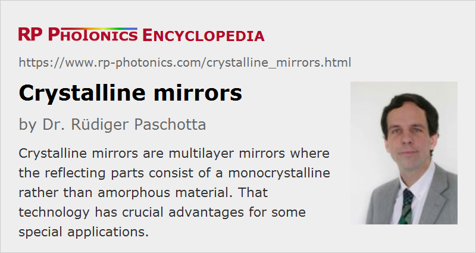

Crystalline Mirrors
Definition: multilayer mirrors where the reflecting parts consist of a monocrystalline material
German: kristalline Spiegel
Categories: optical resonators, photonic devices
How to cite the article; suggest additional literature
Author: Dr. Rüdiger Paschotta
Crystalline mirrors are multilayer mirrors where at least the reflecting parts consist of monocrystalline optical material – typically, of semiconductors. The basic operation principle is usually that of a distributed Bragg reflector or more generally an optical interference coating: the mirror structure contains a sequence of thin transparent optical layers, typically with two alternating materials having different refractive indices. The resulting Fresnel reflection of a single interface between two materials is quite weak, but multiple reflections coherently add up, so that overall high reflectivities of mirror devices can be achieved. In some cases, the reflectance (reflectivity) is very close to 100%, so that such Bragg mirrors can be called supermirrors.
Dielectric mirrors are based on the same operation principle, only that they are based on dielectric layer materials, which are usually amorphous rather than monocrystalline. Metal-coated mirrors are also not considered as crystalline mirrors, since they do not have a monocrystalline structure.
Fabrication of Crystalline Mirrors
Crystalline semiconductor mirrors can be produced with epitaxial methods such as molecular beam epitaxy (MBE) or metal-organic chemical vapor deposition (MOCVD). For obtaining strictly monocrystalline layers, the use of a monocrystalline substrate is mandatory: it defines the growth pattern of the structure, potentially over a large area, where self-organizing growth is not possible.
A common semiconductor substrate material is gallium arsenide (GaAs), and a suitable layer material is aluminum gallium arsenide (Al1−xGaxAs) with a variable gallium content x, which influences the refractive index and also the band gap energy, but only to a small extent the lattice constant (→ lattice-matched growth). A Bragg mirror may be made even of GaAs and AlAs, but some minimum gallium content of e.g. 10% is often desired for reducing the tendency for oxidation in ambient air. Another common substrate material is indium phosphide (InP), often used in the context of photonic integrated circuits. Such semiconductor materials are also well known in the context of laser diodes and other semiconductor lasers; semiconductor Bragg mirrors are used mostly in surface-emitting semiconductor lasers such as vertical cavity surface-emitting lasers (VCSELs) and vertical external-cavity surface-emitting lasers (VECSELs), and also in semiconductor saturable absorber mirrors (SESAMs). However, crystalline semiconductor mirrors can also be used as separate parts.
It has also been demonstrated that GaP/AlGaP multilayers can be grown on single crystalline silicon [9]. Compared with GaAs-based mirrors, that approach has the advantage that potentially much larger mirrors can be produced, since high quality silicon substrates are readily available with large diameter (sometimes >400 mm). However, the technology of GaP/AlGaP/silicon mirror fabrication is not yet as advanced as that of GaAs-based mirrors.
For general optics applications, particularly for low-loss cavity mirrors, the semiconductor substrate below a crystalline multilayer mirror is disturbing, for example due to its absorption for transmitted light or the difficulty to produce a highly effective anti-reflection coating on the backside. Also, mirror coatings are often needed on curved substrates (e.g., for constructing a stable optical resonator), which is not compatible with epitaxial growth methods. Therefore, techniques have been developed for removing the actual mirror structure from the semiconductor substrate (e.g. with lapping and etching) and optically bonding it to some other transparent substrate, typically consisting of a dielectric material like fused silica or sapphire [11]. High-quality optical bonding is even possible with a slightly curved substrate material, so that focusing or defocusing mirrors can be made, which would be difficult to achieve with a monocrystalline substrate, as mentioned above. Besides, it can be advantageous to obtain crystalline mirrors on substrates with a wide choice of geometries and materials.
A positive side effect of the mentioned fabrication technique involving substrate removal and optical bonding is that the defect density of the grown layer structure tends to be substantially lower on the side of the substrate. Therefore, the optical quality of the obtained mirror can even be higher after the transfer of the mirror structure to the final host substrate.
Achieved Reflectivities
The combination of a substantial refractive index contrast with the high material quality of epitaxially grown monocrystalline semiconductor layers are helpful for producing Bragg mirrors with a very high reflectivity in some wavelength region. For example, GaAs-based structures have been demonstrated where the peak reflectivity is ≈99.998%, resulting in a finesse of ≈150 000 of a Fabry–Perot interferometer [7]. Such mirrors can be called supermirrors. However, the best supermirrors so far in terms of peak reflectivity have been made with dielectric materials.
High reflectivities of course possible only in the region where the material absorption is low, i.e., for wavelengths above the bandgap wavelengths. The limit towards longer wavelengths can result from free carrier absorption. For example, GaAs-based mirrors are suitable roughly in the spectral region from 0.8 μm to 5 μm.
High optical reflectivities require that both absorption and scattering losses are low. Low scattering can be of interest not only in the context of reflectivity. For example, scattering on mirrors of ring laser gyroscopes (used with non-normal incidence) can lead to a coupling of counterpropagating waves and thus to “locking” of the gyroscope signal at low rotation rates. Therefore, the use of crystalline mirrors in laser gyroscopes can be advantageous [10].
Reduced Mechanical Noise of Thermal Origin
In highly sensitive interferometers, as used for example for gravitational wave detection, and in highly stable reference cavities used e.g. for laser stabilization in ultra-precise optical clocks, the performance can be limited by the Brownian motion of the surfaces of mirrors, which introduces additional phase noise. According to the fluctuation–dissipation theorem, the power spectral density of that thermal noise is determined by the mechanical losses (damping due to internal dissipation) of the material, which can be quantified with a so-called loss angle. Note that thermal noise at frequencies close to mechanical resonance frequencies can actually be quite strong in case of low mechanical damping. However, the noise at other (non-resonant) frequencies is reduced accordingly. In practical applications, the mentioned mechanical residences may not be a problem, for example if the relevant noise frequencies are all below the lowest resonance frequency.
It has be found that monocrystalline coating materials generally exhibit much lower mechanical damping than amorphous coating materials. For example, GaAs-based mirrors can exhibit less than one hundredth of the mechanical loss angle of Ta2O5/SiO2 layers at room temperature or at cryogenic temperatures, as are sometimes used in order to reduce thermal noise. Therefore, crystalline mirrors can be used to realized a substantial reduction of thermally induced phase noise.
Concerning dielectric mirrors, a substantial contribution to the thermal noise can come from the amorphous multilayer materials, another contribution from the substrate. Combining a monocrystalline mirror structure with an amorphous substrate, as is sometimes required for various reasons, can result in a substantial improvement in terms of noise in comparison with conventional dielectric mirrors; it has been demonstrated that an order of magnitude in terms of reduced mechanical damping can be achieved in comparison with the best dielectric multilayer mirrors [7]. It appears that various applications in optical metrology and gravitational wave detection can profit from this improved performance.
Thermally induced phase noise can be further reduced by operation at low temperature. Apart from the reduction of the thermal energy kB T, cryogenic operation can also result in further reduced mechanical damping in monocrystalline thin films, while amorphous structures actually exhibit an increase in mechanical loss at cryogenic temperatures.
For some high-power applications, the substantially higher thermal conductivity of crystalline mirror coatings can also be advantageous.
The author thanks Garrett D. Cole for various useful comments.
Suppliers
The RP Photonics Buyer's Guide contains 2 suppliers for crystalline mirrors.
Questions and Comments from Users
Here you can submit questions and comments. As far as they get accepted by the author, they will appear above this paragraph together with the author’s answer. The author will decide on acceptance based on certain criteria. Essentially, the issue must be of sufficiently broad interest.
Please do not enter personal data here; we would otherwise delete it soon. (See also our privacy declaration.) If you wish to receive personal feedback or consultancy from the author, please contact him e.g. via e-mail.
By submitting the information, you give your consent to the potential publication of your inputs on our website according to our rules. (If you later retract your consent, we will delete those inputs.) As your inputs are first reviewed by the author, they may be published with some delay.
Bibliography
| [1] | P. R. Saulson, “Thermal noise in mechanical experiments”, Phys. Rev. D 42 (8), 2437 (1990), doi:10.1103/PhysRevD.42.2437 |
| [2] | K.Numata, A. Kemery and J. Camp, “Thermal-noise limit in the frequency stabilization of lasers with rigid cavities”, Phys. Rev. Lett. 93 (25), 250602 (2004), doi:10.1103/PhysRevLett.93.250602 |
| [3] | S. Rowan, J. Hough and D. Crooks, “Thermal noise and material issues for gravitational wave detectors”, Phys. Lett. A 347 (1-3), 25 (2005), doi:10.1016/j.physleta.2005.06.055 |
| [4] | G. M. Harry et al., “Thermal noise from optical coatings in gravitational wave detectors”, Appl. Opt. 45 (7), 1569 (2006), doi:10.1364/AO.45.001569 |
| [5] | A. D. Ludlow et al., “Compact, thermal-noise-limited optical cavity for diode laser stabilization at 1·10−15”, Opt. Lett. 32 (6), 641 (2007) doi:10.1364/OL.32.000641 (using dielectric mirrors, demonstrating the thermal noise limitation) |
| [6] | T. Kessler et al., “A sub-40-mHz-linewidth laser based on a silicon single-crystal optical cavity”, Nature Photonics 6 (10), 687 (2012) (using a crystalline substrate, but presumably amorphous mirror layers) |
| [7] | G. D. Cole et al., “Tenfold reduction of Brownian noise in high-reflectivity optical coatings”, Nature Photonics 7, 644 (2013), doi:10.1038/nphoton.2013.174 |
| [8] | G. Harray, T. P. Bodiya and R. deSalvo (eds.), Optical coatings and thermal noise in precision measurement, Cambridge University Press (2012) |
| [9] | A. C. Lin et al., “Epitaxial growth of GaP/AlGaP mirrors on Si for low thermal noise optical coatings”, Optical Materials Express 5 (8), 1890 (2015), doi:10.1364/OME.5.001890 |
| [10] | U. Schreiber et al., “Sensing earth’s rotation with a helium-neon ring laser operating at 1.15 μm”, Opt. Lett. 40 (8), 1705 (2015), doi:10.1364/OL.40.001705 |
| [11] | M. Aspelmeyer and G. D. Cole, “Substrate transferred monocrystalline Bragg mirrors”, European Patent 2607935 (2016) |
See also: mirrors, Bragg mirrors, dielectric mirrors, supermirrors, interferometers, phase noise
and other articles in the categories optical resonators, photonic devices
|  |
If you like this page, please share the link with your friends and colleagues, e.g. via social media:
These sharing buttons are implemented in a privacy-friendly way!